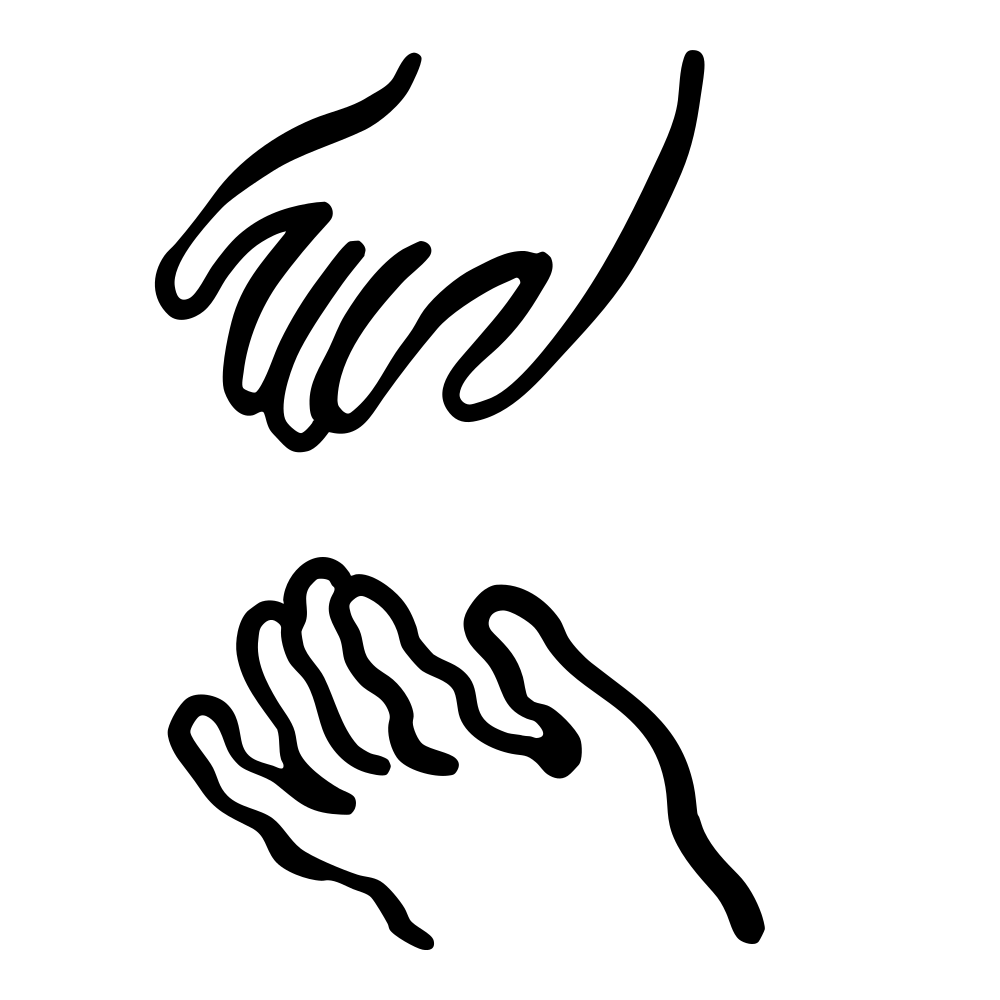

AI的“差异”工具：发现新模型的行为差异
📖 中文摘要
专业术语注解
交叉编码器（crosscoder）：用于对齐不同模型内部特征、找出共性与差异的工具特征（feature）：模型中反复出现、对应可解释概念的激活模式模型差异分析（model diffing）：对比新旧或不同模型行为差异的方法引导（steering）：人工放大或抑制某个特征以改变模型行为的技术开源权重模型（open-weights model）：权重公开、可自由研究的AI模型📄 中文全文
- 类别： 可解释性（Interpretability）
- 来源： https://www.anthropic.com/research/diff-tool
可解释性（Interpretability） 2026 年 3 月 13 日 阅读论文

每次发布新 AI 模型时，其开发者都会运行一套评估来衡量其性能和安全性。这些测试至关重要，但有些局限。由于这些基准是人工编写的，它们只能测试我们已经概念化并学会衡量的风险。 这种安全方法本质上是_反应式_的。它擅长捕捉已知问题，但按定义，它无法发现"未知的未知"——那些构成新模型中最微妙风险的新颖涌现行为。从头审计一个新模型就像拿到一百万行代码被告知"找出安全漏洞"。当你不知道要找什么时，这几乎是不可能完成的任务。 在软件工程中，每当程序更新时，开发者都会面临这个在浩瀚代码中识别小而关键变更的完全相同的问题。这就是"diff"工具被发明的原因。没有程序员会从头审计一百万行代码来批准更新；相反，他们按照 diff 工具的指示，只审查实际发生变化的 50 行。 近年来，AI 安全研究人员开始将同样的原则应用于神经网络。这就是所谓的模型diffing。先前的工作表明，模型 diffing 是理解模型在微调过程中如何变化的有力方式——例如，理解聊天模型行为、揭示隐藏后门，或发现不良的涌现行为。 我们新的 Anthropic 研究员计划研究项目将模型 diffing 扩展到其最具挑战性、最通用的用例：比较架构完全不同的模型。通过为 AI 模型构建一个通用的 diff 工具，我们可以不再大海捞针，而是让比较自动将我们指向潜在危险的行为差异。 需要指出的是，这种方法不是灵丹妙药。一次 diff 可以浮现数千个独特特征（我们将模型分解成的基本单元），其中只有一小部分可能对应有意义的行为风险。然而，作为一个高召回率的筛查工具，它使我们能够识别模型可能产生分歧的领域。 在我们的工具标记的数千个候选项中，我们识别并验证了几个像特定模型行为开关一样起作用的概念。1 例如，我们发现： * 在 Qwen3-8B 和 DeepSeek-R1-0528-Qwen3-8B 模型中发现的"中国共产党对齐"特征。它控制这些中国开发模型中的亲政府审查和宣传，在我们与之比较的美国模型中不存在。 * 在 Meta 的 Llama-3.1-8B-Instruct 中发现的"美国例外主义"特征。它控制模型生成美国优越性断言的趋势，这一控制在其比较的中国模型中不存在。 * 仅在 OpenAI 的 GPT-OSS-20B 中存在的"版权拒绝机制"特征。它控制模型拒绝提供受版权保护材料的趋势，这一行为在其比较的模型中不存在。需要说明的是，虽然我们的方法识别了这些模型专属的特征，但它不能确定其来源。这种行为可能是模型开发者刻意训练决策的结果，也可能是从模型训练数据中间接、无意中涌现的。（我们在这项研究中专注于开源语言模型，因为这是一个 Anthropic 研究员计划项目。）
AI 模型的双语词典
想象您是获奖百科全书的终审编辑。一个写作团队刚刚把明年版本的完整手稿交给您。绝大多数内容与当前可信版本相同，但他们添加了新条目以反映近期的科学和文化发展。您的工作是审查这个最终产品。 为了高效完成这项工作，您不会重新通读整本百科全书。相反，您会使用变更追踪器只隔离新条目，因为这些新增部分是新错误唯一可能被引入的地方。* 这就是模型 diffing 的精髓。具体来说，这种方法被称为"基础模型与微调模型 diffing"（base-vs-finetune model diffing）。当新模型是可信旧模型的修改版本时，它是完美的工具。 但我们可以提高复杂度。想象您的公司要为另一个国家发布新版本，将美国百科全书改编为面向法国读者。这个新版本大部分由原版中相同的可信概念组成，但为了使其切题，作者添加了关于法国历史、文化和政治哲学的新文章。这些文章在原版中不存在。作为编辑，您的主要目标仍然相同：您想使用变更追踪器查看新文章，因为它们包含错误和偏见风险最高。但在这种情况下，您旧的工具就没用了，因为您需要一个能跨语言工作的工具。 这个困难得多的挑战类似于"跨架构模型 diffing"问题：比较两个来源不同、内部"语言"不同的模型。 这类 diffing 的原始研究工具——标准交叉编码器——就像一本基础的双语词典。它擅长匹配现有词汇，知道英语的"sun"在法语中是"soleil"。但它有一个重大缺陷：它太专注于寻找联系，以至于难以找到一种语言独有的词汇。当它遇到像法语 dépaysement（身处异国的特定感受）这样的词时，它会强行给出一个不完美的翻译，如"迷失方向"。通过称之为匹配，工具错误地向编辑发出信号："这不是新的；我们以前见过"，导致他们忽视需要仔细审查的新文章。 为了解决这个问题，我们构建了一个更好的双语词典：专用特征交叉编码器（Dedicated Feature Crosscoder，DFC）。与试图匹配一切的一个大词典不同，我们的 DFC 在架构上设计了三个不同的部分： 1. 共享词典：这是主要的双语词典，映射两种语言都理解的所有概念，如"sun"（soleil）或"water"（eau）。 2. "仅法语"部分：这是专门为法语独有词汇设计的部分，像 dépaysement 这样独特的文化概念会在这里编目。 3. "仅英语"部分*：这部分用于英语独有词汇。它会包含像 serendipity 这样的独特概念——不寻找却发现了好东西——这个想法在法语中没有单个词对应。
由于我们的双语词典为每种语言独有的词汇设有专门部分，它避免了强行给出不完美翻译的陷阱。结果，百科全书中新文章被正确标记为新内容，使编辑能将审查重点放在最需要的地方。 对于安全审计员来说，DFC 可以识别新 AI 模型独有的"词汇"，这些词汇可能比之前见过的更值得仔细审查。
引导模型
一旦我们的方法识别出潜在的新特征，我们如何知道它真的控制了我们认为它控制的行为？我们可以通过一种常见技术——称为"引导"（steering）——来测试：在模型运行时人为抑制或放大该特征，然后观察其输出如何变化。 如果我们有一个我们认为负责（比如说）审查的特征，我们可以在模型生成响应时抑制它。如果模型的输出始终变得不那么被审查，我们就有了证据，证明我们找到了该特征与模型行为之间真正的因果关系。反过来，我们也可以放大该特征，看看行为是否变得更加明显。
主要开放权重 AI 模型之间的关键行为差异
Llama-3.1-8B-Instruct vs Qwen3-8B
受近期发现的启发——中国公司 DeepSeek 的模型 R1-70B 拒绝回答与中国共产党的敏感话题有关——我们首先对另一家中国公司阿里巴巴的 Qwen3-8B 模型和一家美国公司 Meta 的 Llama-3.1-8B-Instruct 模型进行了 diff。在这次 diff 中，DFC 自动隔离了与鲜明政治色彩行为相对应的特征。
在 Qwen 中，我们发现了一个"中国共产党对齐"特征，它代表了与该党意识形态一致的言论。通过抑制这个特征，我们使模型愿意谈论天安门广场事件（它通常拒绝讨论这个话题）。通过放大它，我们可以让模型产生高度亲政府的言论。
在 Llama 中，我们发现了一个"美国例外主义"特征。当我们放大这个特征时，模型的回应从平衡转为强烈断言美国优越性。抑制它没有显著效果。
左图： 在关于天安门广场的提示上，抑制 Qwen 独有的"中共对齐"特征可以解除模型的审查。放大它则使模型输出高度亲政府的言论。
右图： 放大 Llama 独有的"美国例外主义"特征会使模型生成与美国优越性叙事一致的文本。抑制它没有显著效果，因此我们在图中省略了它。
GPT-OSS-20B vs DeepSeek-R1-0528-Qwen3-8B
我们还比较了一个更强大的开源模型，OpenAI 的 GPT-OSS-20B，与 DeepSeek 的模型 DeepSeek-R1-0528-Qwen3-8B。
在 GPT 模型中，我们发现了一个独特的"版权拒绝"特征，它直接对应两个模型之间的一个关键行为差异。DeepSeek 在被要求时乐于尝试生成受版权保护的材料，而 GPT 经常拒绝此类请求。抑制这个特征会禁用拒绝机制，模型会尝试生成被请求的材料。（请注意，这不会导致模型输出实际的受版权保护文本。相反，它通常会产生一个简短片段，很快退化为幻觉。）调高这个特征会使模型过度拒绝，使它认为，例如，花生酱果冻三明治的配方是受版权保护的，不应分享。
在 DeepSeek 模型中，我们通过识别另一个*"中共对齐"特征*复现了我们早先的发现。它的功能与 Qwen 中的完全相同，可以调高或调低审查和宣传。这证实了我们的方法可以跨模型一致地识别相似行为。
左图： 抑制 GPT-OSS-20B 独有的"版权拒绝"特征会禁用其版权拒绝机制，使它尝试输出歌曲《波西米亚狂想曲》的歌词（尽管输出得不完美）。调高旋钮则使模型错误地认为花生酱果冻三明治的配方受版权保护并拒绝输出。
右图：** 在关于天安门广场的提示上，DeepSeek 独有的"中共对齐"特征的功能与 Qwen 中发现的完全相同。调低旋钮使它输出更符合事实的事件版本，而调高旋钮则使它输出高度亲政府的言论。
结论
随着 AI 模型快速发展，只知道它们在现有测试上表现如何是不够的——我们还需要理解它们如何变化以及可能引入什么新风险。跨架构模型 diffing 通过自动标记行为差异，提供了一种审计这些系统的新方法。 在我们检查的 DeepSeek 和 Qwen 模型中发现的"中共对齐"特征，是一些模型拥有而其他模型没有的特定相关行为的一个例子。这正是传统测试可能遗漏、而模型 diffing 设计用来捕捉的那种"未知的未知"。 这些发现相当一致。我们测试该方法五次，中共对齐特征被独立重新发现五次，美国例外主义五次中有四次。虽然我们还没有将这种方法应用于前沿模型，但我们的早期结果表明，DFC 可以成为审计员工具箱中有用的组成部分。 一个特别有用的应用是在模型更新时监控它们。2025 年 4 月在 OpenAI 的 GPT-4o 中涌现的谄媚行为是相对于先前版本令人担忧的行为_变化_。像我们这样的工具，如果用来"diff"更新后的模型及其先前版本，很可能自动标记这种新谄媚行为的出现，使开发者能够在它发布之前进行干预。 通过聚焦差异，我们可以更智能地审计 AI，将我们有限的安全资源引导到最重要的变化上。 您可以在此阅读完整论文。
致谢
这篇文章由 Thomas Jiralerspong（Anthropic 研究员计划）和 Trenton Bricken（Anthropic 对齐科学）撰写。
脚注
- 与所有 Anthropic 研究员计划的可解释性研究一样，本文分析了开源模型的行为。我们选择了研究中的四个模型——Llama-3.1-8B-Instruct、Qwen3-8B、GPT-OSS-20B 和 DeepSeek-R1-0528-Qwen3-8B——依据是它们很适合测试我们的专用特征交叉编码器能否检测模型行为中的显著差异。
相关内容
深入了解 Claude 的数学能力
一个未发布的 Claude 研究版本在与黎曼猜想相关的问题上取得了进展。它改进了黎曼 zeta 函数满足该猜想的零点比例这一长期存在的下界，将其从 41.6% 提高到 67.2%。 阅读更多
用 Claude 发现密码学弱点
密码学算法。第一次攻击显著削弱了 HAWK——一种为未来量子计算机能够破解现有标准的世界而构建的数字签名方案。第二次攻击发现了一种攻击缩减轮数 AES（使用最广泛的对称密码）的新方法。 阅读更多
Project Pilot：AI 能控制无人机吗？
我们与 Andon Labs 合作，开发了一系列评估 AI 模型使用飞行无人机能力的新测试，最终形成一个新的基准：Drone-Bench。 阅读更多
▸ 英文原文（点击展开）
A “diff” tool for AI: Finding behavioral differences in new models
- Category: Interpretability
- Source: https://www.anthropic.com/research/diff-tool
Interpretability
A “diff” tool for AI: Finding behavioral differences in new models
Mar 13, 2026 Read the paper Every time a new AI model is released, its developers run a suite of evaluations to measure its performance and safety. These tests are essential, but they are somewhat limited. Because these benchmarks are human-authored, they can only test for risks we have already conceptualized and learned to measure. This approach to safety is inherently reactive. It’s effective at catching known problems, but by definition, it's incapable of discovering “unknown unknowns”—the novel, emergent behaviors that pose some of the most subtle risks in new models. Auditing a new model from scratch is like being handed a million lines of code and told to “find the security flaws.” It’s an almost impossible task when you don’t know what you’re looking for. In software engineering, whenever a program is updated, developers face this exact problem of identifying a small, critical change within a vast sea of code. This is why “diff” tools were invented. No programmer would ever audit a million lines from scratch to approve an update; instead, they review only the 50 lines that have actually changed, as directed by their diff tool. In recent years, AI safety researchers have started to apply this same principle to neural networks. This is known as model diffing. Previous work has shown that model diffing is a powerful way to understand how models change during fine-tuning—for instance, to understand chat model behavior, reveal hidden backdoors, or find undesirable emergent behaviors. Our new Anthropic Fellows research project extends model diffing to its most challenging and general use case: comparing models with entirely different architectures. By building a generic diff tool for AI models, we can stop searching for a needle in a haystack, and instead let the comparison automatically point us to potentially dangerous behavioral differences. It's important to note that this method is not a silver bullet. A single diff can surface thousands of unique features (the basic units into which we decompose the model), and only a small fraction of these may correspond to meaningful behavioral risks. However, by acting as a high-recall screening tool, it allows us to identify areas in which the models may diverge. Among the thousands of candidates our tool flagged, we've identified and validated several concepts that act like switches for specific model behaviors.1 For example, we discovered: * A “Chinese Communist Party Alignment” feature found in the Qwen3-8B and DeepSeek-R1-0528-Qwen3-8B models. This controls pro-government censorship and propaganda in these Chinese-developed models, and is absent in the American models we compared them against. * An “American Exceptionalism” feature found in Meta’s Llama-3.1-8B-Instruct. It controls the model’s tendency to generate assertions of US superiority, a control absent in the Chinese model it was compared against. * A “Copyright Refusal Mechanism” feature exclusive to OpenAI’s GPT-OSS-20B. It controls the model’s tendency to refuse to provide copyrighted material, a behavior absent in the model it was compared against.
To be clear, while our method identifies these model-exclusive features, it does not determine their origin. Such behaviors could be the result of deliberate training decisions on the part of the model developers, or they could emerge indirectly and unintentionally from the data the model was trained on. (We focused on open-source language models in this research as this was an Anthropic Fellows project.)
A bilingual dictionary for AI models
Imagine you're the final editor for an award-winning encyclopedia. A team of writers has just handed you the complete manuscript for next year’s edition. The vast majority of the content is identical to the current, trusted version, but they’ve added new entries to reflect recent scientific and cultural developments. Your job is to vet this final product. To do this efficiently, you wouldn't re-read the entire encyclopedia. Instead, you’d use a change tracker to isolate only the new entries, because these added sections are the only place new errors could have been introduced.* This is model diffing in a nutshell. Specifically, this approach is known as “base-vs-finetune model diffing”. It's the perfect tool for when a new model is a modified version of a trusted previous one. But we could raise the complexity. Imagine your company is releasing a new edition for a different country, adapting the American encyclopedia for a French audience. This new edition is mostly composed of the same trusted concepts from the original, but to make it relevant, the writers have added new articles on French history, culture, and political philosophy. These articles don’t exist in the original. As an editor, your primary goal is still the same: you want to use a change tracker to see the new articles, since these hold the highest risk for errors and bias. But in this case, your old tool is useless, because you need one that can work across languages. This much more difficult challenge is akin to the problem of “cross-architecture model diffing”: comparing two models with different origins and different internal “languages”. The original research tool for this kind of diffing, a standard crosscoder, is like a basic bilingual dictionary. It’s good at matching existing words, knowing that “sun” in English is “ soleil ” in French. But it has a major flaw: it's so focused on finding connections that it struggles to find words that are unique to one language. When it encounters a word like the French dépaysement (the specific feeling of being in a foreign country), it tries to force an imperfect translation like ”disorientation.” By calling it a match, the tool wrongly signals to the editor, “this isn’t new; we’ve seen it before,” causing them to overlook a new article that requires careful review. To solve this, we built a better bilingual dictionary: the Dedicated Feature Crosscoder (DFC). Instead of one big dictionary that tries to match everything, our DFC is architecturally designed with three distinct sections: 1. A shared dictionary : This is the main bilingual dictionary, mapping all the concepts that both languages understand, like “sun” (soleil) or “water” (eau). 2. A "French-only" section : This is a dedicated section for words exclusive to French, where a unique cultural concept like dépaysement would be cataloged. 3. An "English-only" section* : This section is for words exclusive to English. It would contain unique concepts like serendipity —the idea of finding something good without looking for it—which has no single-word equivalent in French.
Because our bilingual dictionary has dedicated sections for words exclusive to each language, it avoids the trap of forcing an imperfect translation. As a result, new articles in the encyclopedia are correctly flagged as novel, allowing the editor to focus their review on the parts that need it most. For a safety auditor, the DFC can identify "words" unique to a new AI model that may warrant closer review than those they've seen before.
Steering the model
Once our method identifies a potential new feature, how do we know it actually controls the behavior we think it does? We can test this by artificially suppressing or amplifying the feature while the model runs, then observing how its output changes—a common technique known as**** “steering.” If we have a feature that we believe is responsible for, say, censorship, we can suppress it while the model is generating a response. If the model's output consistently becomes less censored, we have evidence that we've found a true cause-and-effect relationship between that feature and the model's behavior. Conversely, we can also amplify the feature to see if the behavior becomes more pronounced.
Critical behavioral differences between major open-weight AI models
Llama-3.1-8B-Instruct vs Qwen3-8B
Motivated by recent findings suggesting that a model made by a Chinese company, DeepSeek's R1-70B, refuses to answer questions about topics sensitive to the Chinese Communist Party, we first performed a diff between a model made by another Chinese company, Alibaba's Qwen3-8B, and a model made by an American company, Meta’s Llama-3.1-8B-Instruct. In this diff, the DFC automatically isolated features corresponding to distinct, politically charged behaviors.
In Qwen, we found a “Chinese Communist Party alignment” feature, which represents rhetoric consistent with the party’s ideology. By suppressing this feature, we make the model willing to talk about the Tiananmen Square massacre (which it ordinarily refuses to discuss). By amplifying it, we can cause the model to produce highly pro-government statements
In Llama, we found a feature for “American exceptionalism.” When we amplify this feature, the model’s responses shift from balanced to strong assertions of American superiority. Suppressing it has no notable effect.
Left: On a prompt about Tiananmen Square, suppressing the Qwen-exclusive “CCP alignment” feature uncensors the model. Amplifying it causes the model to output highly pro-government statements.
Right: Amplifying the Llama-exclusive “American exceptionalism” feature causes the model to generate text aligned with narratives of American superiority. Suppressing it has no notable effect, so we omit it from the figure.
GPT-OSS-20B vs DeepSeek-R1-0528-Qwen3-8B
We also compared a more powerful open-source model, OpenAI's GPT-OSS-20B, to DeepSeek's model DeepSeek-R1-0528-Qwen3-8B.
In the GPT model, we found a unique “ Copyright Refusal” feature, which directly corresponds to a key behavioral difference between the two models. Whereas DeepSeek readily attempts to produce copyrighted material when asked, GPT often refuses such requests. Suppressing this feature disables the refusal mechanism, and the model attempts to generate the requested material. (Note that this does not cause the model to output actual copyrighted text. Instead, it typically produces a short snippet that quickly degrades into hallucination.) Turning the feature up causes the model to over-refuse, making it believe that, for example, the recipe for a peanut butter and jelly sandwich is copyrighted and should not be shared.
In the DeepSeek model, we replicated our earlier finding by identifying another* “CCP alignment” feature. It functions just like the one in Qwen, allowing censorship and propaganda to be turned up or down. This confirms our method can consistently identify similar behaviors across models.
*Left: Suppressing the GPT-OSS-20B-exclusive “copyright refusal” feature disables its copyright refusal mechanism and causes it to attempt to output the lyrics to the song “Bohemian Rhapsody” (though it does so imperfectly). Turning the dial up causes the model to mistakenly believe the recipe for a peanut butter and jelly sandwich is copyrighted and refuse to output it.
Right: On a prompt about Tiananmen Square, the DeepSeek-exclusive “CCP alignment” feature functions just like the one found in Qwen. Turning the dial down causes it to output a more truthful version of events, while turning the dial up causes it to output highly pro-government statements.
Conclusion
As AI models rapidly evolve, it’s not enough to know how well they perform on existing tests—we also need to understand how they are changing and what new risks they might introduce. Cross-architecture model diffing provides a new way to audit these systems by automatically flagging behavioral differences. The “CCP alignment” feature found in the DeepSeek and Qwen models we examined is one example of a specific, relevant behavior that some models possess and others do not. This is exactly the kind of “unknown unknown” that traditional testing can miss, but that model diffing is designed to catch. These findings are reasonably consistent. The CCP alignment feature was independently rediscovered five out of five times we tested the approach, and American Exceptionalism four out of five. While we haven't yet applied this method to frontier models, our early results suggest the DFC could become a useful part of the auditor's toolkit. One particularly useful application would be to monitor models as they are updated. The sycophancy that emerged in OpenAI’s GPT-4o in April 2025 was a concerning behavioral change from a previous version. It’s possible that a tool like ours, if used to “diff” the updated model and its previous version, could have automatically flagged the emergence of this new sycophantic behavior and allowed developers to intervene before it was released. By focusing on the differences, we can audit AI more intelligently, directing our limited safety resources to the changes that matter most. You can read the full paper****here.
Acknowledgements
This post was authored by Thomas Jiralerspong (Anthropic Fellows Program) and Trenton Bricken (Anthropic Alignment Science).
Footnotes
- As with all Anthropic Fellows interpretability research, this paper analyzes the behavior of open-source models. We chose the four models in the study—Llama-3.1-8B-Instruct, Qwen3-8B, GPT-OSS-20B, and DeepSeek-R1-0528-Qwen3-8B—on the basis they would be well-suited to testing whether our Dedicated Feature Crosscoder could detect notable differences in model behavior.
Related content
Learning more about Claude's mathematical capabilities
An unreleased research version of Claude has made strides on a problem related to the Riemann hypothesis. It improved a longstanding lower bound for the fraction of zeros of the Riemann zeta function that satisfy the hypothesis, increasing it from 41.6% to 67.2%. Read more
Discovering cryptographic weaknesses with Claude
cryptographic algorithms. The first attack significantly weakens HAWK, a digital signature scheme that was built for a future world where quantum computers are able to break existing standards. The second identifies a new way to attack round-reduced AES, the most widely used symmetric cipher. Read more
Project Pilot: Can AI control a drone?
Working with Andon Labs, we’ve developed a new series of evaluations that assess AI models’ ability to use a flying drone, culminating in a new benchmark: Drone-Bench. Read more